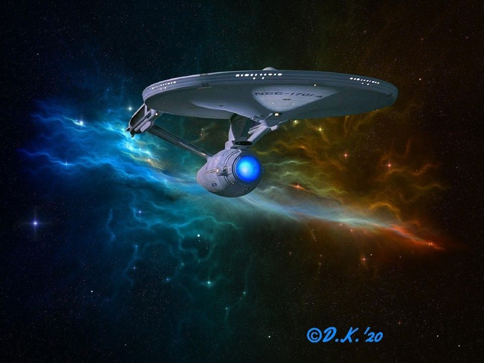
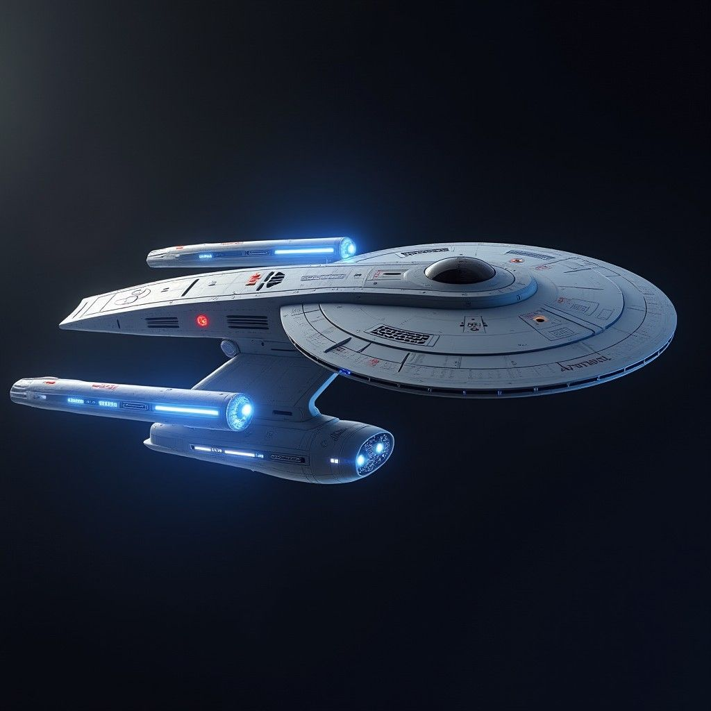
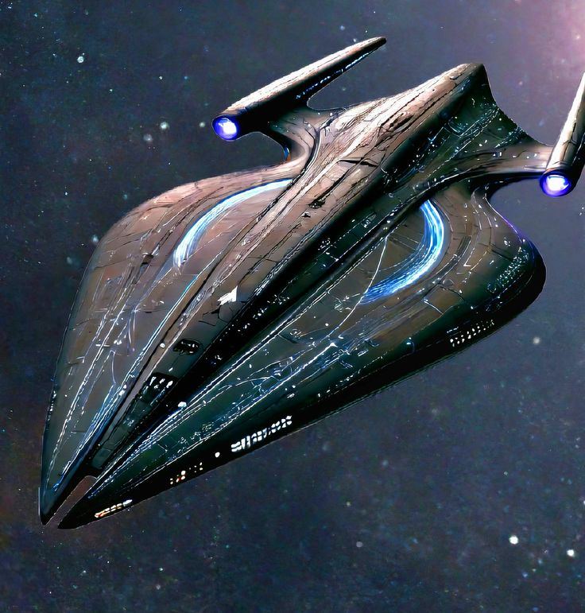

Uma Viagem pelo Mundo Star Trek
Conheça um pouco das Naves que compoem esse fascinante mundo.
Seção 1 - USS NCC-1701- Enterprise
Seção 2 - USS Voyager
Seção 3 - USS Agoney

×
Seção USS Enteprise NCC-1701D
Outra versão da Enterprise, produzida pela Paramount.